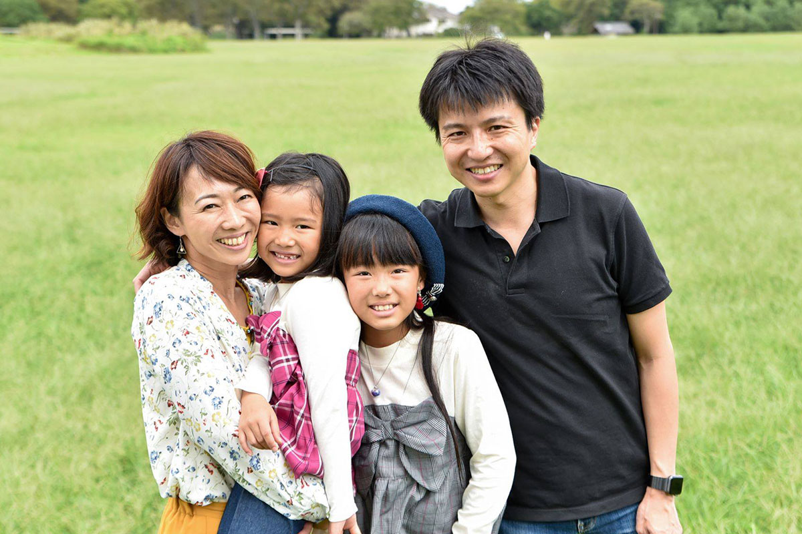
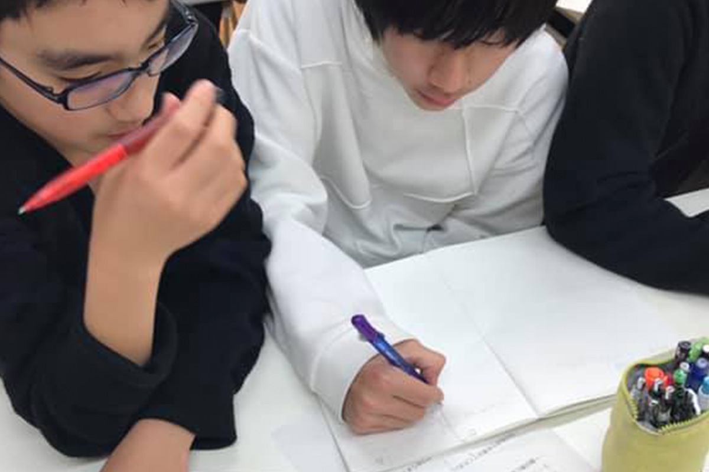

RECOMMENDATION
ここがオススメ、アクターズスクール

EVENT
イベント出演
「100回の練習より、1回の本番」をモットーにしています。
年間 20 本以上のイベントオファーがあり。お祭りなどのイベント以外にも、よしもと新喜劇から、 映画の撮影、パブリックビューイングでのライブなどもあります。

FAMILY PHOTO
家族撮影日
モデルレッスンの一貫で、家族撮影日というものがあります。これは自分の思い描く構図を家族に伝えて、家族で撮影をする時間です。組み立てて話す。カメラマンにイメージを伝える。だけではなく、そのイメージを家族にも伝えることが、より成長できる時間になります。なにより自信になり、家族の一生の宝物になる写真が残せます。

REFRECTION SHEET
リフレクションシート
アクターズスクールでは、毎回のレッスンでリフレクションシートの提出があります。
これは、自分が今日のレッスンで何をしたか、何を感じたか、文字にして文章に残す時間です。現代のコミュニケーションツールとして、言葉を書くことが苦手な子は非常に多く、思っていることを文字にできるかどうかというとても大切な時間です。作文などをゆくゆくスムーズに書けるようになるためにという狙いもあります。このシートを書くことで次回レッスンに向けての計画を自分で建てられるようになります。